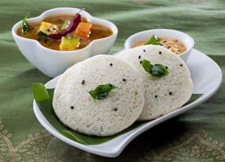
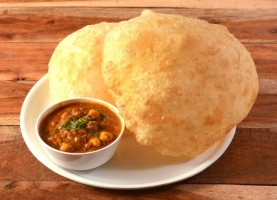
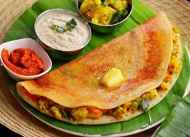
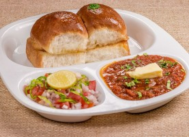

Dish 1
Idli Sambar is a South Indian breakfast meal where soft fluffy steamed cakes known as idli are served with sambar, a vegetable lentil stew. Idli Sambar is made with lentils, plenty of spices, mixed vegetables and herbs.
Price: Rs. 70

Dish 2
Chole Bhature is a popular North Indian dish consisting of spicy chickpeas (chole) served with deep-fried bread called bhature.
Price: Rs. 80

Dish 3
Masala Dose is a traditional South Indian dish that consists of a crispy fermented rice and urad dal (black gram) crepe filled with a spiced potato mixture.
Price: Rs. 85

Dish 4
Pav Bhaji is a popular and flavorful street food dish from Maharashtra, India. It consists of a spiced and mashed vegetable curry, known as bhaji, served with soft bread rolls, called pav.
Price: Rs. 90